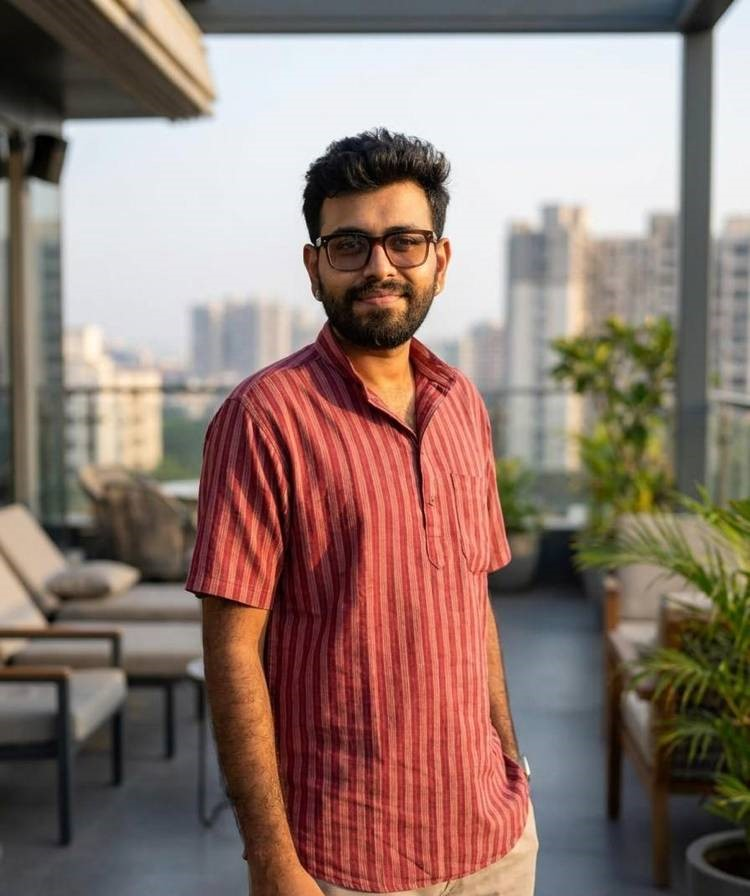
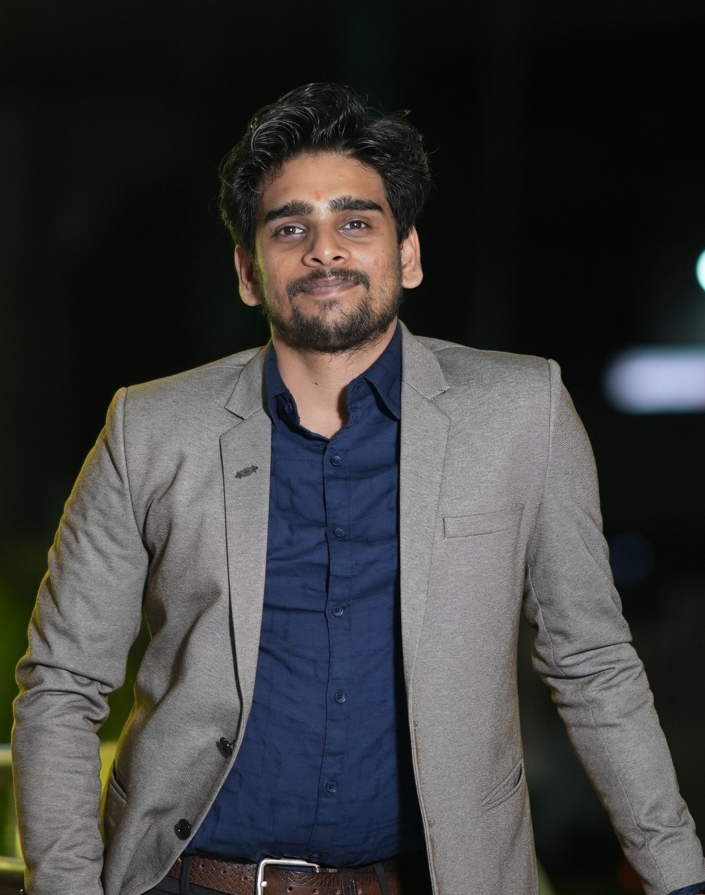
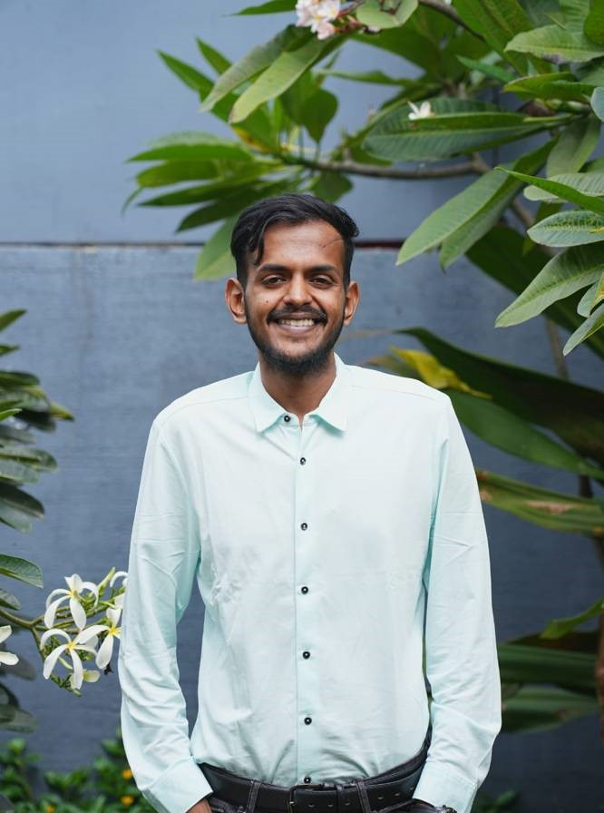

A team building resilient systems for learning, deployment, and long-term social impact.
A2Z brings together engineering, digital systems, field deployment, and institutional thinking to build practical solutions for social change. Our core team drives execution across product, technology, and real-world implementation, supported by advisors who bring strategic, governance, and public-systems depth.
Core Team
The execution-focused team leading product, systems, and field-ready innovation.

Madhav Prakash
Madhav works at the intersection of engineering, human-centered design, and adaptive systems to create technologies that are usable, learnable, and field-ready. His work focuses on translating engineering principles into practical solutions that improve autonomy, accessibility, and real-world adoption.
Core Focus
- Assistive and adaptive system architectures
- Human-centered engineering for field use
- Rapid prototyping and practical deployment

Prajwal Thanjavur
Prajwal designs the digital and data infrastructure that supports learning, execution, and better decision-making. His work focuses on building technology systems that reduce friction, strengthen feedback, and enable scalable operations without adding unnecessary complexity.
Core Focus
- Digital systems and data infrastructure
- Learning, feedback, and decision workflows
- AI-enabled operational simplicity

Ranga Priyan
Ranga specializes in translating advanced technology into reliable, deployable systems for real-world environments. His work bridges engineering, embedded systems, and field realities to create solutions that generate actionable insights and support better decisions on the ground.
Core Focus
- Embedded systems, IoT, and field integration
- ML-enabled feedback and sensing systems
- Research-to-deployment translation
Advisors
Strategic, institutional, and governance guidance supporting long-term execution.
Ramana Tadepalli
Ramana brings a blend of institutional systems thinking, governance design, and grassroots development understanding. His work focuses on connecting long-range strategy with grounded execution through policy alignment, learning architecture, and multi-stakeholder systems design.
Core Focus
- Institutional systems and governance
- Systems thinking and policy alignment
- Learning architecture for execution
Niranjan Rao
Niranjan brings execution rigor to large-scale program design and implementation. His focus is on converting strategy into scalable operating structures, improving coordination, and building governance systems that support measurable outcomes.
Core Focus
- Program design and sector integration
- Execution governance and operating rhythms
- Scalable implementation structures
Dr. Sudhakar Varanasi
Dr. Sudhakar brings deep experience in the design and scaling of mission-critical public systems. His perspective strengthens A2Z’s ability to think across technology, governance, institutional platforms, and public-private models in complex operating environments.
Core Focus
- Public systems and institutional platforms
- e-Governance and large-scale delivery
- Technology-policy-governance integration